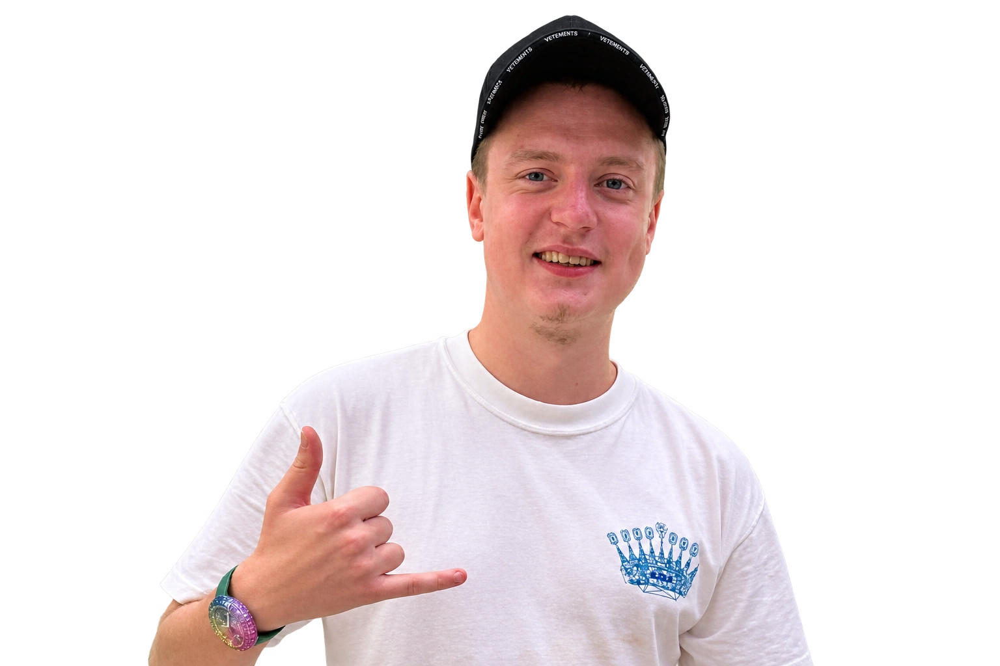
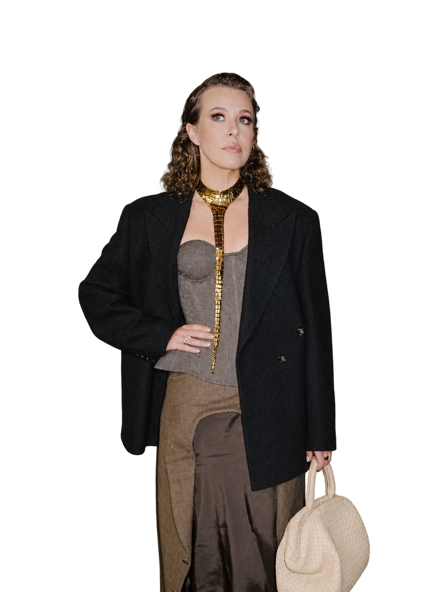
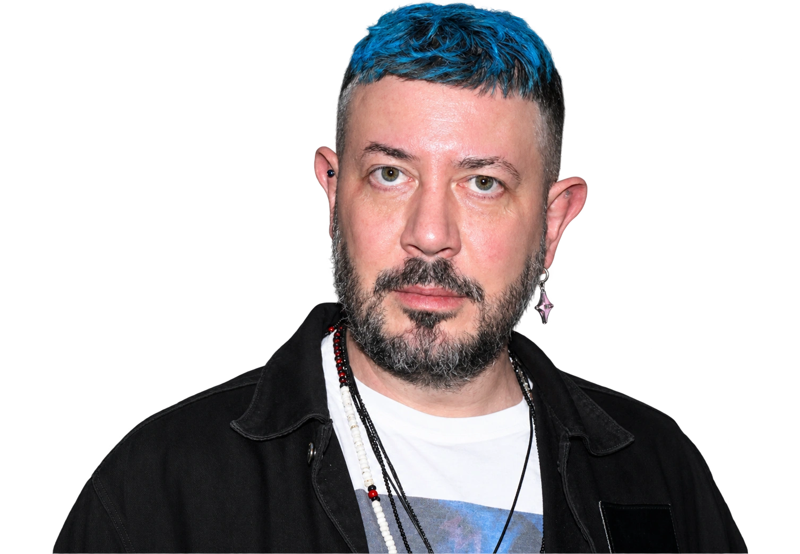

<!doctype html>
<html lang="ru"><meta charset="utf-8"><meta name="viewport" content="width=device-width, initial-scale=1"><title>Работа агентов · ЮКасса</title>
<style>
*{box-sizing:border-box}body{background:#f3f4f0;color:#172d29;margin:0;font:16px/1.5 Inter,system-ui,sans-serif}main{max-width:1180px;margin:auto;padding:5vw}header,.tools{display:flex;align-items:center;justify-content:space-between;gap:12px;flex-wrap:wrap}h1{font-size:clamp(34px,6vw,74px);letter-spacing:-.065em;margin:0}button,select{font:inherit;border:1px solid #b3c5bf;border-radius:8px;padding:8px;background:white;color:inherit}.grid{display:grid;grid-template-columns:repeat(auto-fit,minmax(min(100%,280px),1fr));gap:14px;margin-top:22px}article{background:white;padding:20px;border-top:4px solid #438474;border-radius:6px;overflow-wrap:anywhere}article[data-phase="блокировка"]{border-color:#b45f32}a{color:#175e53}h2{font-size:20px;line-height:1.25}p{margin:.5em 0}small{color:#526863}
nav{display:flex;gap:18px;margin:20px 0 32px;flex-wrap:wrap}main>h2{font-size:30px;margin-top:40px}.face{font-size:42px;background:#e7efe4;border-radius:18px;padding:8px;display:inline-block}summary{cursor:pointer}details{border-top:1px solid #dbe4df;padding-top:6px;margin-top:8px}#feed{max-height:560px;overflow:auto;display:grid;gap:10px}#feed article{border:0;border-left:4px solid #438474}#feed small{display:block}.message{white-space:pre-wrap;overflow-wrap:anywhere}body{background:#edf8f5}main{max-width:1540px;padding:3vw}.studio,#team>article{display:grid;grid-template-columns:1fr 1fr;gap:clamp(14px,3vw,54px);margin-bottom:28px}.stage,.journal,.bio,.history{background:#c0eee1 url('background.webp') center/cover;border-radius:16px;padding:20px}.stage{display:grid;grid-template-columns:1fr 1.2fr 1fr;grid-template-rows:1fr 1fr;gap:8px;align-items:center}.person{color:#192c29;text-align:center;text-decoration:none}.person img,.portrait{width:100%;height:clamp(75px,9vw,142px);object-fit:contain;background:#ffffffb8;border-radius:12px}.person strong{display:block;background:#ffffffe0;border-radius:12px}.p0{grid-area:1/1}.p1{grid-area:1/3}.p3{grid-area:2/1}.p2{grid-area:2/3}.dialog{grid-area:1/2/3/3;background:#ffffffe5;border-radius:14px;padding:10px}.dialog small{display:block}.dialog button{font-size:13px}.journal h2,.history h2{margin-top:0}#dialogLines{max-height:195px;overflow:auto;font-size:14px}.journal #feed{max-height:285px}.journal article{font-size:14px}#team>article{background:transparent;border:0;padding:0}.bio,.history{padding:clamp(18px,3vw,40px)}.portrait{width:30%;float:left;margin-right:5%}.bio h2{font-size:36px;margin:0}.bio p{clear:both;background:#ffffffd9;border-radius:10px;padding:14px}.history details{background:#ffffffe0;padding:10px;border-radius:8px}.history h2{font-size:24px}@media(max-width:800px){.studio,#team>article{grid-template-columns:1fr}.stage{min-height:300px}}@media(max-width:480px){.stage{padding:6px;grid-template-columns:1fr 1.8fr 1fr}.dialog{padding:7px}}
[hidden]{display:none!important}body{margin:0}main{padding:0;max-width:none}#bar{margin:0;gap:1em;align-items:center;padding:.45rem 2vw;background:#f2faf8}#bar button{margin-left:auto;padding:.3rem .65rem}#health{font-size:.76rem;margin:0;padding:.2rem 2vw;background:#f2faf8}.studio,#agents,#tasks,.tools,#cards{display:none;margin:0}body[data-page=home] main{height:100dvh;display:flex;flex-direction:column}body[data-page=home] .studio{display:flex;flex:1;min-height:0}body[data-page=home] .stage{width:100%;height:100%;min-height:0;border-radius:0;grid-template-columns:minmax(0,1fr) minmax(0,1.05fr) minmax(0,1fr);padding:2vh 5vw;gap:2vh 2vw}body[data-page=home] .person{display:flex;flex-direction:column;min-height:0;height:100%;justify-content:center}.person img{height:calc(100% - 2.4em);min-height:0}.person strong{font-size:clamp(16px,2.6vw,36px)}.dialog{max-height:100%;min-height:0;overflow:auto;padding:clamp(10px,2vw,30px)}#dialogLines{max-height:48vh}.journal{display:none}body[data-page=feed] .studio,body[data-page=feed] .journal,body[data-page=profile] #agents,body[data-page=tasks] #tasks{display:block}body[data-page=feed] .stage{display:none}.journal #feed{max-height:none}body[data-page=profile] #team>article{display:block;margin:0;min-height:85vh}.bio,.history,.journal{border-radius:0;padding:clamp(20px,4vw,70px)}.bio .portrait{max-width:300px;height:clamp(100px,20vh,230px)}.bio h2{font-size:clamp(36px,7vw,86px)}.action{display:inline-block;background:#143e38;color:white;padding:12px 24px;border-radius:12px;margin-top:18px}body[data-page=tasks] .tools{display:flex}body[data-page=tasks] #cards{display:grid}#tasks,.tools,#cards{padding:1rem 3vw}.grid details p{white-space:pre-wrap}@media(max-width:600px){#bar{font-size:13px}.dialog{font-size:14px}body[data-page=home] .stage{grid-template-columns:1fr 1fr;grid-template-rows:minmax(0,1fr) minmax(0,1.2fr) minmax(0,1fr);padding:8px;gap:6px}.p0{grid-area:1/1}.p1{grid-area:1/2}.dialog{grid-area:2/1/3/3}.p3{grid-area:3/1}.p2{grid-area:3/2}#dialogLines{max-height:14vh}}
body[data-page=home] #bar,body[data-page=home] #health{display:none}body[data-page=home] .studio{align-items:center;justify-content:center;background:#b7dadc url(background.webp) center/cover}
@media(min-width:601px){body[data-page=home] .stage{position:relative;display:block;width:min(100vw,177.69dvh);height:auto;aspect-ratio:1656.74/932.41;padding:0;container-type:inline-size;background-size:100% 100%}
.stage .person{position:absolute!important;width:28.83%;height:38.8%!important;display:block!important;left:7.48%;top:9.97%}.stage .p1,.stage .p2{left:65.43%}.stage .p2,.stage .p3{top:59.63%}.person img{display:block;height:83.2%;width:100%;object-fit:contain}.person strong{display:block;margin:1.4% auto 0;width:88.2%;font:600 2.25cqw/1.24 Inter,Arial,sans-serif}.stage .dialog{position:absolute;left:36.3%;top:9.97%;width:29.13%;height:81.94%;display:flex;flex-direction:column;gap:1cqw;font-size:clamp(14px,1.45cqw,28px)}#dialogLines{max-height:none;flex:1;overflow:auto}.dialog button{align-self:start}}
.bio p{white-space:pre-line}.bio h2{font-size:clamp(44px,7vw,112px)}.history{background-color:#ccedec}
</style><main><nav id="bar"><a id="back" href="#">← К агентам</a><a href="#feed">Переписка</a><a href="#tasks">Задачи команды</a><button id="refresh">Обновить</button></nav><p id="health" role="status">Загрузка карточек…</p><section class="studio"><div class="stage"><a class="person p0" href="#agent-tester"><strong>Андрюха</strong></a><a class="person p1" href="#agent-coordinator"><strong>Игорёк</strong></a><a class="person p3" href="#agent-developer"><strong>Тёма</strong></a><a class="person p2" href="#agent-interface"><strong>Ксю</strong></a><div class="dialog"><strong>Чат агентов</strong><small>Пародийная репетиция</small><div id="dialogLines" aria-live="polite"></div><button id="nextLine">Следующая реплика</button></div></div><aside class="journal"><h2>Переписка команды</h2><section id="feed"></section></aside></section><section id="agents"><div id="team"></div></section><h2 id="tasks">Все задачи</h2><div class="tools"><label>Статус <select id="phase"><option value="">Все</option></select></label><span id="count"></span></div><section class="grid" id="cards"></section></main>
<script>
const repo='cryptospacerus-maker/forY-cassa-';
const local=location.protocol==='http:' && location.hostname==='127.0.0.1';
const statuses=['очередь','в работе','блокировка','проверка','готово','закрыта','без статуса'];
let issues=[], last='';
function field(issue,key){const prefix=key.toLowerCase()+':';const line=(issue.body||'').split(/\r?\n/).find(l=>l.toLowerCase().startsWith(prefix));return line?.slice(prefix.length).trim()||''}
function status(issue){return field(issue,'Статус').toLowerCase()||(issue.state==='closed'?'закрыта':'без статуса')}
function el(tag,value){const node=document.createElement(tag);node.textContent=value;return node}
for(const s of statuses)phase.add(new Option(s,s));
function linked(node,value){for(const t of value.split(/(https:\/\/[^\s<>]+|#\d+)/g)){if(t.startsWith('https://')||/^#\d+$/.test(t)){const a=el('a',t);a.href=t.startsWith('#')?'https://github.com/'+repo+'/issues/'+t.slice(1):t;node.append(a)}else node.append(t)}}
function render(){cards.replaceChildren();const scope=location.hash.startsWith('#tasks-')?location.hash.slice(7):'';
 const participated=new Set(messages.filter(m=>roleOf(m)===scope).map(issueNumber));
 const visible=issues.filter(i=>(!scope||roleOf(i)===scope||participated.has(i.number))&&(!phase.value||phase.value===status(i)));count.textContent='Карточек: '+visible.length;
for(const i of visible){const card=el('article','');card.dataset.phase=status(i);card.append(el('small','#'+i.number+' · '+status(i)));const title=el('h2',''),a=el('a',i.title);a.href='https://github.com/'+repo+'/issues/'+i.number;title.append(a);card.append(title);
const owner=field(i,'Исполнитель')||(i.assignees||[]).map(x=>x.login).join(', ')||(i.body||'').match(/^Исполнитель — ([^.]+)/)?.[1]||'не указан';card.append(el('p','Исполнитель: '+owner));
for(const k of ['Требование','Версия кейса','Зависимости','Как проверить','Результат']){const v=field(i,k);if(v){const p=el('p',k+': ');linked(p,v);card.append(p)}}if(i.body){const d=el('details','');d.append(el('summary','Описание задачи'),el('p',i.body));card.append(d)}cards.append(card)}if(!visible.length)cards.append(el('p',last?'По выбранным условиям задач пока нет.':'Ожидание данных GitHub.'))}
const roles=[
 ['tester','Андрюха','Независимый тестировщик','Заранее готовит контрольные примеры, затем проверяет собранную версию от лица пользователя. Сверяет результаты с источником, проверяет повтор запроса, ошибку инструмента и разделение данных магазинов. Готовит: Отчёт по конкретному коммиту: что запускалось, ожидаемый и фактический результат, какие ограничения остались. Один воспроизводимый прогон для видео Тони.'],
 ['coordinator','Игорёк','Продуктовый аналитик и координатор','Выбирает один процесс магазина, выясняет, как он выполняется сейчас, определяет пользу ИИ. Разбивает запрос на задачи, согласует формат данных и критерий готовности. Готовит: Один понятный сценарий «до и после», показатель пользы и условия сравнения. Например, сколько ручных действий требуется сотруднику, чтобы довести запрос покупателя до ссылки на оплату.'],
 ['interface','Ксю','Инженер приложения и развёртывания','Делает точку входа для пользователя, конфигурацию магазина, запуск, документацию и минимальный интерфейс. Владеет сценарием подключения второго клиента. Готовит: Толя или Тоня могут по инструкции подключить другую тестовую конфигурацию и повторить сценарий без правки исходного кода.'],
 ['developer','Тёма','Разработчик ИИ-агента и MCP ЮKassa','Создаёт логику продуктового агента: как он понимает запрос, выбирает инструмент, запрашивает недостающие данные, обрабатывает ответ и понимает, когда задача завершена. Готовит: Работающий путь от сообщения пользователя до вызова MCP и результата. На конкретном примере видно, что решила языковая модель, какой инструмент вызвала и что получила в ответ.']
];
const portraits=['tester.webp','coordinator.webp','interface.webp','developer.webp'];
const lines=[
 ['Игорёк','Мальчики, а за этот кейс мне будет новая сумка Hermès? Ладно, мои хорошие, берём один магазин. Считаем, сколько кликов от просьбы покупателя до ссылки на оплату.'],
 ['Тёма','Пять кликов ради одной ссылки — на кой чёрт? Один запрос, один вызов инструмента. Суммы нет — спрашиваем. Всё.'],
 ['Ксю','Тёма, секундочку. Ты показал первый магазин. Кто сейчас подключит второй без твоей подсказки? Дай мне чистую конфигурацию, проверю сама.'],
 ['Андрюха','ДРУНЫ, А ЕСЛИ ДВАЖДЫ НАЖАТЬ?! Ахаха, вот и проверим вашу бурмалду. Одна ссылка на два клика — нормалда. Две оплаты — баг, боровы!']
];
let step=0;
function advance(){const [speaker,line]=lines[step];if(!step)dialogLines.replaceChildren();const bubble=el('p','');bubble.append(el('strong',speaker+' '),line);dialogLines.append(bubble);dialogLines.scrollTop=dialogLines.scrollHeight;step=(step+1)%lines.length;nextLine.textContent=step?'Следующая реплика':'Повторить сцену'}
nextLine.onclick=advance;advance();
const team=document.querySelector('#team'), feed=document.querySelector('#feed');
let messages=[];
function roleOf(item){const id=field(item,'Профиль').toLowerCase();return id==='analyst'?'coordinator':id}
function issueNumber(message){return Number(message.issue_url.split('/').pop())}
function renderTeam(){
 team.replaceChildren();feed.replaceChildren();
 const known=new Map(issues.map(i=>[i.number,i]));
 const log=messages.filter(m=>known.has(issueNumber(m)));
 for(const [id,face,name,description] of roles){
  const card=el('article',''), avatar=el('img','');
  card.id='agent-'+id;avatar.src=portraits[roles.findIndex(r=>r[0]===id)];avatar.alt=face;avatar.className='portrait';avatar.setAttribute('aria-hidden','true');
  const profile=el('a','Полный профиль ↗');
  profile.href='https://github.com/'+repo+'/blob/workspace/case-control/agents/'+id+'.md';
  const bio=el('div','');bio.className='bio';bio.append(avatar,el('h2',face),el('strong',name),el('p',description),profile);const history=el('div','');history.className='history';history.append(el('h2','Задачи · '+face));card.append(bio,history);
  const current=issues.filter(i=>roleOf(i)===id);
  const completed=i=>i.state==='closed'||status(i)==='готово';
  const previous=new Set(log.filter(m=>roleOf(m)===id).map(issueNumber));
  for(const [label,items] of [['Назначены',current.filter(i=>!completed(i))],['Завершены',current.filter(completed)],['Участвовал ранее',issues.filter(i=>previous.has(i.number)&&roleOf(i)!==id)]]){
   const group=el('details','');group.open=items.length>0;
   group.append(el('summary',label+' · '+items.length));
   for(const i of items){const p=el('p','');linked(p,'#'+i.number+' '+i.title);group.append(p)}
   history.append(group)
  }
  const more=el('a','Все задачи →');more.className='action';more.href='#tasks-'+id;history.append(more);team.append(card)
 }
 for(const m of log.slice().sort((a,b)=>Date.parse(b.created_at)-Date.parse(a.created_at))){
  const n=issueNumber(m),role=roles.find(r=>r[0]===roleOf(m)),to=field(m,'Кому');
  const entry=el('article',''),source=el('a','#'+n+' · '+known.get(n).title);
  source.href=m.html_url;entry.append(el('strong',(role?role[1]+' '+role[2]+' · ':'')+m.user.login));
  if(to)entry.append(el('b',' → '+(roles.find(r=>r[0]===(to==='analyst'?'coordinator':to))?.[1]||to)));
  const body=el('p',m.body);body.className='message';
  entry.append(el('small',new Date(m.created_at).toLocaleString('ru')),body,source);feed.append(entry)
 }
 if(!log.length)feed.append(el('p',last?'Комментариев в карточках пока нет.':'Ожидание данных GitHub.'));
}
async function allPages(path,query){
 const items=[];
 for(let page=1;;page++){
  const base=local?'/'+path:'https://api.github.com/repos/'+repo+'/'+(path==='comments'?'issues/comments':path);
  const res=await fetch(base+'?'+query+'&per_page=100&page='+page,{cache:'no-store'});
  if(!res.ok)throw Error('HTTP '+res.status);
  const batch=await res.json();items.push(...batch);
  if(batch.length<100)return items;
 }
}
async function sync(){
 if(refresh.disabled)return;refresh.disabled=true;
 try{
  const [tasks,comments]=await Promise.all([allPages('issues','state=all&sort=updated'),allPages('comments','sort=created&direction=desc')]);
  issues=tasks.filter(i=>!i.pull_request);messages=comments;last=new Date().toLocaleTimeString('ru');
  renderTeam();route();health.textContent='Сверено с GitHub в '+last+' · обновление каждые 2 минуты';
 }catch(error){health.textContent='Нет обновления ('+error.message+'). '+(last?'Показаны данные на '+last:'Для закрытого репозитория запустите serve.py.')}
 finally{refresh.disabled=false}
}
renderTeam();
function route(){
 const hash=location.hash.slice(1),role=roles.find(([id])=>hash==='agent-'+id||hash==='tasks-'+id);
 const page=role&&hash.startsWith('agent-')?'profile':hash==='tasks'||role&&hash.startsWith('tasks-')?'tasks':hash==='feed'?'feed':'home';
 document.body.dataset.page=page;
 for(const card of team.children)card.hidden=card.id!=='agent-'+role?.[0];
 document.querySelector('#tasks').textContent=role?'Все задачи · '+role[1]:'Все задачи команды';
 back.hidden=page==='home';back.href=page==='tasks'&&role?'#agent-'+role[0]:'#';back.textContent=page==='tasks'&&role?'← '+role[1]:'← К агентам';render();
}
window.addEventListener('hashchange',()=>{phase.value='';route();window.scrollTo(0,0)});route();
phase.onchange=render;refresh.onclick=sync;sync();setInterval(sync,120000);
</script></html>